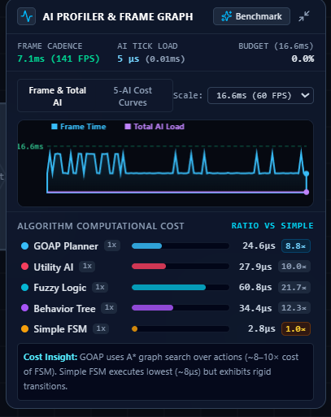

Research Question: "How does fuzzy-logic decision making affect NPC behavior compared with alternative AI decision architectures?"
This floating telemetry panel renders at the bottom-right of the simulation arena (implemented in src/components/PerformanceGraph.tsx and powered by src/game/PerformanceProfiler.ts). It proves the real-time scalability of our AI architectures by measuring CPU microsecond execution costs alongside rendering cadence.

1. FRAME CADENCE: 7.1ms (141 FPS)
Measured via performance.now(). Indicates the browser's hardware render cycle is running at 141 Hz. 60 FPS corresponds to 16.6ms. Since 7.1ms < 16.6ms, it glows green.
2. AI TICK LOAD: 5 μs (0.01ms)
Total CPU time across all active NPC AI routines during this tick. 5 μs = 0.000005s.
3. BUDGET (16.6ms): 0.0%
Fraction of the 16.66ms frame window consumed by AI. Demonstrates that AI decision logic is lightweight enough to support hundreds of concurrent agents.
4. Oscilloscope Canvas (Rolling Curves)
Cyan curve tracks frame render time over 100 frames. Purple curve at the very bottom tracks Total AI Load, visually demonstrating that AI computation is negligible compared to browser drawing.
5. Cost Insight Callout (Bottom Box)
Explains architectural trade-offs: GOAP uses $A^*$ graph search (8–10× FSM), while Simple FSM executes lowest (2.8 μs) but exhibits rigid transitions.
| Algorithm | Measured Cost | Ratio vs FSM | Computational Reason & Code Origin |
|---|---|---|---|
| Simple FSM | 2.8 μs |
1.0× (Baseline) | Direct scalar if-else checks on health and distance (src/ai/simpleLogic.ts). Zero state search, O(1) complexity. |
| GOAP Planner | 24.6 μs |
8.8× | Forward $A^*$ search over action preconditions & effects (src/ai/goap.ts: L193-L232). Clones world states and prioritizes open set. |
| Utility AI | 27.9 μs |
10.0× | Calculates 4 mathematical response curves (Exponential, Logistic, Linear, Quadratic) and applies 12% inertia bonus (src/ai/utility.ts). |
| Behavior Tree | 34.4 μs |
12.3× | Traverses composite Selector and Sequence nodes, evaluating dynamic predicates and action leaves (src/ai/behaviorTree.ts). |
| Fuzzy Logic | 60.8 μs |
21.7× | Highest computational load. Evaluates continuous trimf & trapmf memberships, 5 Mamdani rules, and vector centroid defuzzification on every frame (src/ai/fuzzy.ts). |
An NPC (Non-Player Character) in this project features two decoupled systems:
The game loop runs via requestAnimationFrame. Every tick inside GameEngine.update(rawDt) follows this strict sequence:
updateAutomatedPlayer() (deterministic kiting at 180px, automated EMP pulse shockwave at 135px).Math2D.rayIntersectAABB).| TypeScript Concept | Code Sample from Project | Java / C++ Equivalent |
|---|---|---|
const vs let |
const d = Math2D.dist(a, b); |
const float d; in C++ or final double d; in Java. Block-scoped immutable reference. |
| Interface | export interface Vector2 { |
Like a struct in C++ or a pure data class in Java. Defines object shape; zero runtime overhead. |
| Union Types | type AIType = 'fuzzy' | 'behavior_tree' | 'simple' | 'goap' | 'utility'; |
Like a type-safe enum in Java/C++. Restricts string values to exact allowed options. |
| Nullable & Optional | nearestHeal: HealingStation | null; |
Explicit null-safety (like std::optional<T> in C++ or Optional<T> in Java). Prevents null pointer crashes. |
| Arrow Functions | const survivals = trials.map(t => t.survivalTime); |
Lambda expressions: trials.stream().map(t -> t.survivalTime) in Java, or list comprehension in Python. |
src/ai/simpleLogic.ts)Evaluates discrete scalar checks:
Obstacle Avoidance: Checks only the single center forward ray sensor. If hitDistance < 50px, it projects target direction onto the wall surface tangent (OBSTACLE_SLIDE).
Strengths & Weaknesses: Extremely low CPU load (2.8 μs). Weakness: Rigid behavior and sudden boundary snapping.
src/ai/behaviorTree.ts)Organized into a Root Priority Selector (evaluates high-level goals from left to right):
Is Health < 35%? → Navigate to Heal Station (boosts retreat speed by 1.25×).Is Agent Exhausted? → Disengage & Catch Breath (maintains 180px standoff, 55% speed).Player Behind Crate? (raycast check) → Navigate Around Crate Corner (evaluates all 4 crate corners).Predictive Whisker Chase (5-ray whisker deflection with quadratic urgency).Strengths & Weaknesses: Modular, readable, and highly maintainable (34.4 μs). Weakness: Still discrete; transitions can feel stepped.
src/ai/fuzzy.ts)
1. Fuzzification Equations:
Triangular: trimf(x; a, b, c) = max(0, min((x - a) / (b - a), (c - x) / (c - b)))
Trapezoidal: trapmf(x; a, b, c, d) = max(0, min((x - a) / (b - a), 1, (d - x) / (d - c)))
2. The 5 Continuous Rules:
3. Vector Defuzzification:
D_blended = Σ(w_i · k_i · V_i) / Σ(w_i · k_i)
Where $k_{\text{retreat}}=1.6, k_{\text{flank}}=1.1, k_{\text{balanced}}=1.0, k_{\text{aggressive}}=1.3, k_{\text{relentless}}=1.4$.
Obstacle avoidance is continuously injected: D_final = normalize(D_blended + (1.4 + 1.5 · Danger_obstacle) · F_avoid).
Worked Example (HP=35%, Dist=150px):
healthLow = 0.50, healthMed = 0.20, distNear = 0.25, distMed = 0.40.
Weights: Retreat = 0.50 ($0.80$), Flank = 0.20 ($0.22$), Balanced = 0.20 ($0.20$). Total = 1.22.
Result: 65% Retreat, 18% Flank, 17% Chase. NPC angles away smoothly toward shrine without snapping!
src/ai/goap.ts)
World states are boolean atom dictionaries (e.g. { isHealthy, atHealingStation, inCombatRange, hasLineOfSight }).
Survive & Regenerate (Priority 95 if HP ≤ 35), Flank Obscured Player (Priority 70 if no LOS), Strike Player (Priority 50).Navigate to Healing Shrine, Regenerate HP in Shrine, Corner Flank Maneuver, Predictive Intercept Gap, Melee Pounce Attack.src/ai/utility.ts)Every action computes a continuous utility score U ∈ [0.0, 1.0]:
| Feature / Dimension | Simple FSM | Behavior Tree | Fuzzy Logic | GOAP Planner | Utility AI |
|---|---|---|---|---|---|
| Representation | Discrete states | Hierarchical composite tree | Continuous membership & rules | Action preconditions & effects | Mathematical response curves |
| Action Selection | Hard if-else ladder | Priority Selector traversal | Mamdani min-max rule blend | A* state-space plan search | Argmax(Utility + Inertia) |
| Transition Quality | Rigid / snapping | Discrete steps | Completely smooth vector blend | Step-by-step plan execution | Continuous with inertia damping |
| Competing Pressures | Fails (only 1 state active) | Strict priority override | Proportional multi-goal blend | Sequential sub-goal chaining | Multi-consideration weighting |
| CPU Cost (Measured) | 2.8 μs (1.0×) | 34.4 μs (12.3×) | 60.8 μs (21.7×) | 24.6 μs (8.8×) | 27.9 μs (10.0×) |
updateAutomatedPlayer) with exact starting coordinates, identical deterministic seeds (Seed = 100000 + trialIdx · 37), and identical physical limits.
| Scenario ID & Name | Time Limit | Geometry & Initial State | What It Scientifically Tests |
|---|---|---|---|
| 1. Open Arena | 30s | No obstacles, no shrines. 100 HP each. | Raw pursuit speed, intercept accuracy, and combat efficiency without barriers. |
| 2. Obstacle Arena | 35s | 6 symmetrical pillar grid. | Continuous 5-ray whisker obstacle avoidance and steering fluidity around static blocks. |
| 3. Corridors & Chokes | 40s | 5 choke barriers and narrow passages. | Spatial adaptation, tight cornering, and navigation resilience under spatial constraints. |
| 4. Low-Health Survival | 35s | 3 bunkers, 1 NW shrine. NPC starts at 25% HP. | Self-preservation triggering, retreat execution, and pathfinding to healing stations under crisis. |
| 5. Healing Shrines | 40s | 2 crates, 2 shrines. Both start at 50% HP. | Dynamic trade-off between pursuing wounded opponent vs retreating to recover health. |
The platform collects 8 primary metrics in src/game/TrialMetricsCollector.ts:
Data exports directly to standard RFC-4180 CSV via exportTrialsToCSV() for analysis in Python (Pandas/Matplotlib).
src/ai/utility.ts: L190-L218). The currently active action receives a +0.12 (12%) inertia bonus, requiring competing actions to be significantly more useful before a switch is triggered.hasLineOfSight atom on every tick. If an obstacle blocks line of sight, the Corner Flank Maneuver action becomes eligible, calculating pathing around the obstacle's closest corner.isExhausted drops top speed to 55% for ~5 seconds, giving the player an escape window and creating tactical pacing.| Day | Topics to Master | Source Files to Inspect | Checklist Self-Test Goal |
|---|---|---|---|
| Day 1 | Project Motivation, Research Question, Profiler Panel | PerformanceProfiler.ts, PerformanceGraph.tsx |
Explain all badges and curves in the Telemetry HUD. |
| Day 2 | Simulation Loop, Physics, Whiskers, Stamina | GameEngine.ts: L457-L895, types.ts |
Trace a full tick from sensing to Reynolds integration. |
| Day 3 | Simple FSM vs Behavior Trees | simpleLogic.ts, behaviorTree.ts |
Explain why FSM jitters and trace BT Selector/Sequence. |
| Day 4 | Fuzzy Logic Masterclass | fuzzy.ts |
Calculate worked numerical example by hand with trimf/trapmf. |
| Day 5 | GOAP Planner vs Utility AI | goap.ts, utility.ts |
Walk through A* plan generation and inertia bonus curves. |
| Day 6 | Scenarios, Opponent Logic, Fairness, CSV Metrics | ExperimentManager.ts, experimentScenarios.ts |
Defend why the automated opponent prevents testing bias. |
| Day 7 | Mock Viva & Spoken Pitch | Study Guide Part 10 (All 15 Questions) | Deliver the 2-minute pitch out loud without hesitation. |